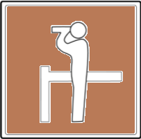
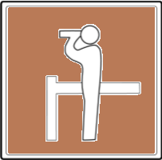

El Viaje de Luquitas
Llegó el fin de semana y la familia de Luquitas estaba feliz
porque se iban de viaje.
Se subieron en el vehículo, se abrocharon los cinturones, y
partieron con destino a Vilcabamba.
Durante el viaje, el padre de Luquitas estaba nervioso porque
que vías tomar para llegar a Vilcabamba, sin embargo, al poco
tiempo vio una señal de tránsito que le indicaba que estaba en
el camino correcto.
A pocas horas de viaje, Luquitas tenía hambre,
entonces la familia decidió estacionarse para comer
algo. Luquitas, que era muy observador, vio que su
papá estacionó su vehículo donde había una gran
letra E dentro de un cuadrado azul.
Terminaron de comer y continuaron su viaje. Luquitas observó por la ventana una señal que parecía que una persona estaba observando con unos binoculares y más adelante observaron un lindo paisaje.
En cierto momento, su padre redujo la velocidad y apareció un gran letrero verde y letras blancas que decía “Vilcabamba”. Estaban tan contentos de haber llegado y de estar rodeados de tanta naturaleza. Pasaron un lindo fin de semana con muchas actividades al aire libre. El domingo regresaron a casa siguiendo y respetando las señales de tránsito.
 
